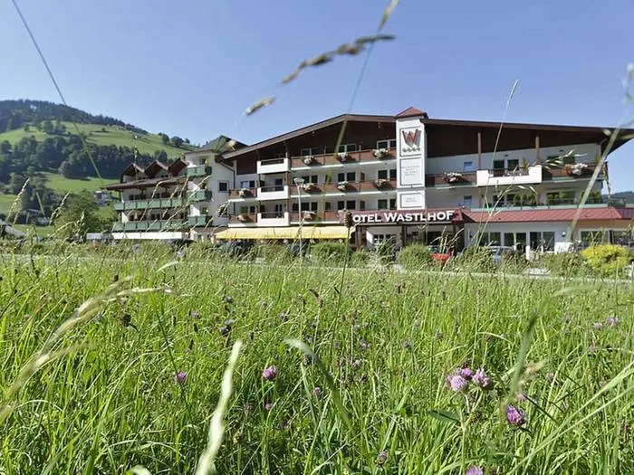
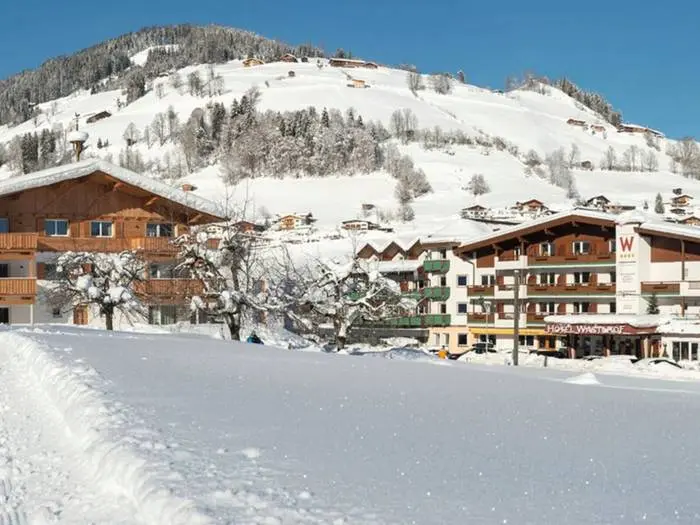
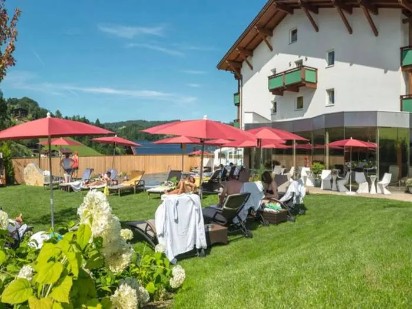

Skiën vanuit het dorp
De Markbachjochbahn brengt je vanuit Niederau omhoog naar het Markbachjoch. Brede, zonnige pistes, ideaal voor beginners en gezinnen, met afdalingen terug tot in het dorp.
Tirol · Oostenrijk
Het zonnige bergdorp aan het begin van de Wildschönau. Een plek om te skiën, te wandelen en elk jaar weer thuis te komen.
❄ Winterseizoen: pistes vanuit het dorp, rodelen en knisperende wintermiddagen.
☀ Zomerseizoen: almen, bergwandelingen en lange avonden op het terras.
Het dorp
Niederau is het eerste dorp dat je bereikt als je vanuit het Inndal bij Wörgl de bergweg omhoog rijdt de Wildschönau in. Het ligt op zo’n 828 meter hoogte in een breed, groen hoogdal, omringd door bergweiden, bossen en toppen in de Kitzbüheler Alpen.
Samen met Oberau, Auffach en Thierbach vormt Niederau de gemeente Wildschönau in het district Kufstein. Het dorp is van oudsher geliefd bij Nederlandse en Britse gasten: compact, gemoedelijk, met skischolen, pensions en hotels op loopafstand van de lift.
Wie hier eenmaal geweest is, komt vaak terug. Dat geldt in ieder geval voor de maker van deze site – al vijftig jaar lang.
Zomer & winter
In de winter een overzichtelijk skidorp met een directe aansluiting op een groot skigebied, in de zomer een rustige uitvalsbasis voor wandelaars, fietsers en gezinnen.
De Markbachjochbahn brengt je vanuit Niederau omhoog naar het Markbachjoch. Brede, zonnige pistes, ideaal voor beginners en gezinnen, met afdalingen terug tot in het dorp.
Met de skipas van Ski Juwel Alpbachtal Wildschönau ski je ook op de Schatzberg in Auffach en via de verbinding door naar het Alpbachtal. De skibus rijdt tussen de dorpen.
Niederau heeft van oudsher sterke skischolen met lessen in het Nederlands, Engels en Duits, en oefenweides vlak bij het dorp. Een fijne plek om te leren skiën.
Loipes door het dal en geruimde winterwandelpaden langs boerderijen en kapelletjes. Ook sneeuwschoenwandelen en rodelen zijn populair in de Wildschönau.
Gezellig zonder overdreven te zijn: na een dag op de latten schuif je aan in een berghut of in het dorp voor Glühwein, Kaiserschmarrn of een Tiroler Gröstl.
Niederau ligt open in het dal en krijgt veel zon – heerlijk op een terras in maart, wanneer de dagen langer worden en de sneeuw nog goed is.
Honderden kilometers gemarkeerde wandelpaden: van rustige dalwandelingen tot tochten over de bergkammen rond het dal. Met de gondel ben je in een paar minuten op hoogte.
Een van de mooiste kloofwandelingen van Tirol: vanuit de Wildschönau langs de woeste Wildschönauer Ache naar beneden, naar Kundl in het Inndal.
Bosweggen en bergweggetjes naar de almen; met een e-bike zijn ook de hoger gelegen hutten goed bereikbaar.
In de zomer zijn veel almen open (“bewirtschaftet”): kaas, karnemelk, speck en Kaspressknödel met uitzicht op de Hohe Tauern en het Kaisergebergte.
Speeltuinen, beekjes om te dammen, boerderijdieren en korte wandelingen met een hut als beloning. De Wildschönau is ingericht op gezinnen.
Blaasmuziek op het dorpsplein, kerkelijke feestdagen en de Almabtrieb in het najaar, wanneer het vee versierd terugkeert uit de bergen.
De Wildschönau
De Wildschönau is een zijdal van het Inndal, hoog boven Wörgl. Elk dorp heeft zijn eigen karakter.
Het eerste en meest toeristische dorp, met de gondel naar het Markbachjoch en het grootste aanbod aan accommodatie.
Het bestuurlijke hart van het dal, met de grote parochiekerk en een brede, zonnige vlakte.
Achter in het dal, aan de voet van de Schatzberg en de verbinding met het Alpbachtal.
Het kleinste en hoogst gelegen dorp, rustig en met weids uitzicht over het Inndal.
De Wildschönau staat bekend om Krautinger, een stevige brandewijn gestookt van witte knollen (stoppelknollen). Volgens de overlevering kregen de boeren van het dal het recht om hem te stoken al in de tijd van keizerin Maria Theresia. Alleen een beperkt aantal boerderijen mag hem nog maken – proeven doe je op de boerderij zelf.
Persoonlijk
Deze site is gemaakt door iemand die al een halve eeuw naar Niederau komt. Wat begon als een vakantie, werd een vaste plek in het jaar. In die tijd zag ik liften komen en gaan, pensions verbouwd worden en kinderen van skileraren zelf skileraar worden. Maar de stilte op een winterochtend, de geur van hooi in de zomer en het uitzicht vanaf het Markbachjoch zijn nooit veranderd.
Op Niederau.nl deel ik wat ik in al die jaren heb geleerd: waar je heen moet, wanneer het er het mooist is en waarom je er steeds weer naar terugverlangt.
“Je gaat niet naar Niederau. Je komt er terug.”
Aanbevolen verblijf
Wie Niederau wil beleven, zit bij Hotel Wastlhof midden in het dorp – met de bergen achter het huis, in de winter én in de zomer.




Promotie: Niederau.nl beveelt Hotel Wastlhof aan. Kijk voor prijzen, faciliteiten en beschikbaarheid op de website van het hotel.
Bereikbaarheid
Let op: op de Oostenrijkse snelweg heb je een vignet nodig (digitaal of als sticker). Vanuit Midden-Nederland reken je op circa 9 à 10 uur rijden.
Treinstation Wörgl Hbf ligt aan de hoofdlijn München – Innsbruck en heeft goede verbindingen, ook met nachttreinen. Vanaf Wörgl rijdt een streekbus de Wildschönau in.
Dichtstbijzijnde luchthavens: Innsbruck (± 1 uur), Salzburg (± 1,5 uur) en München (± 2 uur).
Praktisch
Voor wintersport is half januari tot half maart het meest sneeuwzeker; maart is extra zonnig. In de zomer zijn juni en september rustiger dan de Duitse en Nederlandse schoolvakanties, met prima wandelweer.
Ja, voor de Oostenrijkse snelwegen (zoals de A12 naar Wörgl). Je koopt het online bij ASFINAG of bij tankstations vlak voor de grens. Een digitaal vignet moet je bij online aankoop enkele dagen van tevoren kopen.
Zeker. De brede pistes rond het Markbachjoch, de oefenweides bij het dorp en de skischolen maken Niederau van oudsher populair bij families en beginnende skiërs.
De voertaal is Duits (met een stevig Tirools dialect), maar in hotels, skischolen en restaurants red je je goed met Engels, en vaak ook met Nederlands.
Algemeen alarmnummer 112. Bergredding in Oostenrijk: 140. Check vóór een toer in de winter altijd het lawinebulletin.
Bij de officiële toeristische organisatie van de Wildschönau en bij Ski Juwel. Zie de links hiernaast.
Niederau.nl is een onafhankelijke, persoonlijke site en niet verbonden aan de toeristische organisatie of de liftmaatschappij. Controleer actuele tijden en prijzen altijd bij de officiële bronnen.